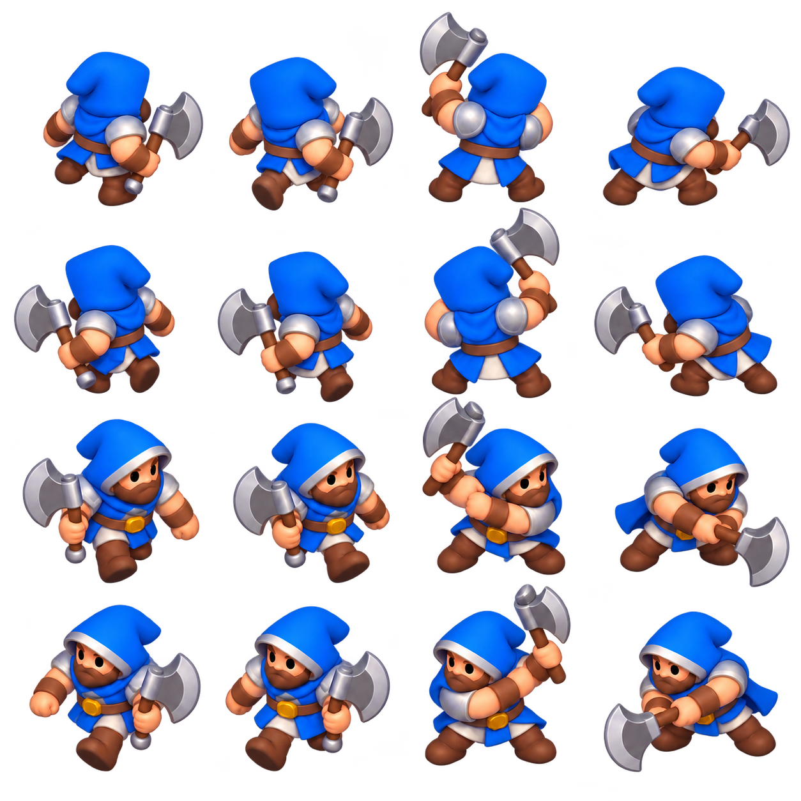
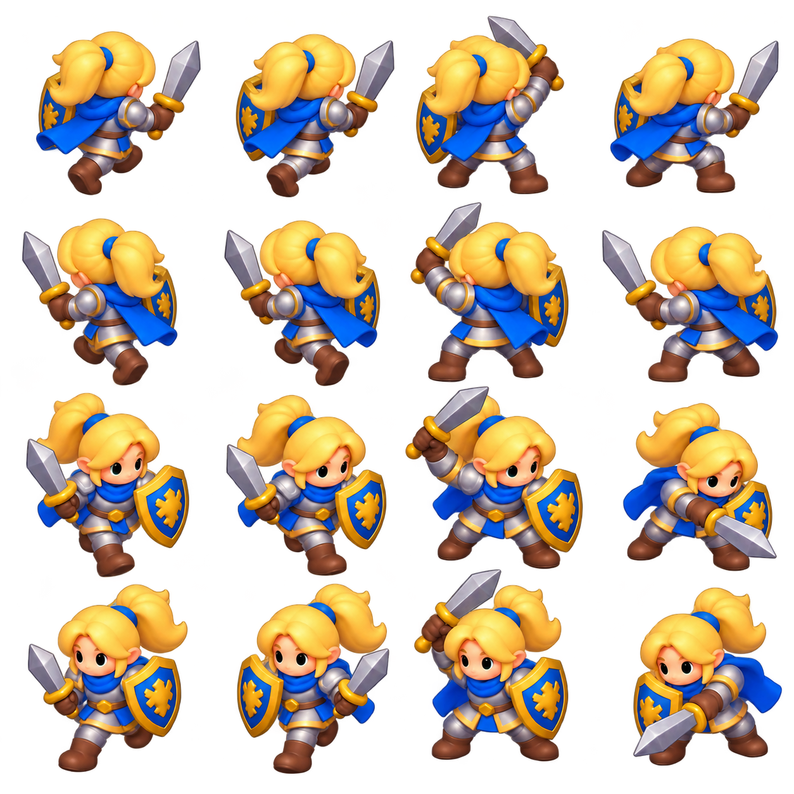

민병·여전사 · 완성 자세 프레임 시안
4방향 × 걷기 2장·공격 2장. 팔다리를 변형하지 않고 전체 그림만 교체합니다.
각 칸의 위는 확대 보기, 아래는 실제 전투에 가까운 작은 크기입니다.
민병 · 한스
민병 원본 16프레임 시트

행: 우상·좌상·우하·좌하 / 열: 걷기 A·B, 공격 준비·타격여전사 · 여성 기사
수정 필요: 좌하 방향 검·방패의 손 일관성, 일부 방향 걷기 A/B의 발 교대.
여전사 원본 16프레임 시트

행: 우상·좌상·우하·좌하 / 열: 걷기 A·B, 공격 준비·타격제작 검증용 시안입니다. 게임의 기존 캐릭터와 전투 로직에는 아직 적용하지 않았습니다. 두 장 사이의 발 교대, 몸 크기, 무기 방향을 비교하세요.